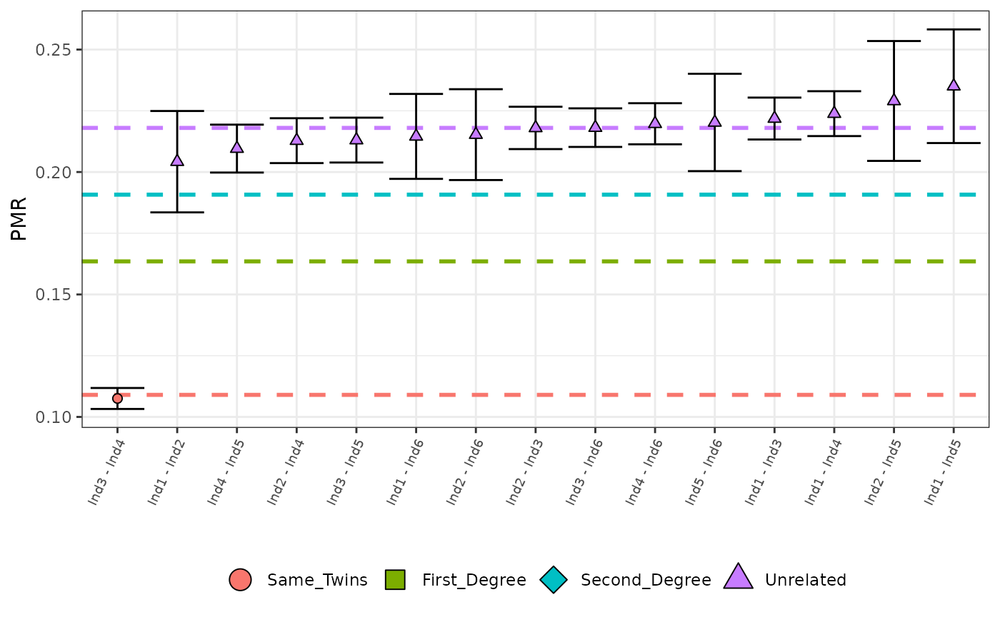

Example
This basic example shows you how to analyse a real (anonymised) ancient DNA data set.
An analysis would normally start by defining paths to all three Eigenstrat files, i.e.,
ind_path <- "path/to/eigenstrat/indfile"
snp_path <- "path/to/eigenstrat/snpfile"
geno_path <- "path/to/eigenstrat/genofile"and we would then preprocess this data using the processEigenstrat() function,
counts_example <- processEigenstrat(
indfile = ind_path,
snpfile = snp_path,
genofile = geno_path
)Since this step is the most computationally expensive, we include an option to automatically save the output as a TSV upon completion of the preprocessing, i.e, to avoid repeating the preprocessing
counts_example <- processEigenstrat(
indfile = ind_path,
snpfile = snp_path,
genofile = geno_path,
outfile = "path_to_save_tsv"
)Also included are options to change the minimum distance between overlapping sites (filter_length) from the default an option to only include individuals (pop_pattern) from certain populations (as defined in the ind file) and an option to remove C->T and G->A SNPs to avoid the effects of deamination.
Note that since the Eigenstrat files are too large to include, we provide a pre-processed data set called counts_example which is the product of running processEigenstrat() on real data (although the raw Eigenstrat files can be found on the Github page).
We now load the counts_example tibble.
#> pair nsnps mismatch pmr
#> 1 Ind1 - Ind2 1518 310 0.2042161
#> 2 Ind1 - Ind3 9435 2093 0.2218336
#> 3 Ind1 - Ind4 8283 1854 0.2238319
#> 4 Ind1 - Ind5 1336 314 0.2350299
#> 5 Ind1 - Ind6 2242 481 0.2145406
#> 6 Ind2 - Ind3 9119 1988 0.2180064
#> 7 Ind2 - Ind4 7984 1699 0.2128006
#> 8 Ind2 - Ind5 1179 270 0.2290076
#> 9 Ind2 - Ind6 1965 423 0.2152672
#> 10 Ind3 - Ind4 20952 2253 0.1075315
#> 11 Ind3 - Ind5 7994 1703 0.2130348
#> 12 Ind3 - Ind6 10994 2398 0.2181190
#> 13 Ind4 - Ind5 6924 1451 0.2095609
#> 14 Ind4 - Ind6 9745 2141 0.2197024
#> 15 Ind5 - Ind6 1739 383 0.2202415We can we can estimate the degrees of relatedness from the raw counts using the callRelatedness() function. Users have the option to change the prior probability for each degree of relatedness (class_prior) from the default uniform prior, to define the expected PMR (average_relatedness) for a pair of unrelated individuals from the default of the sample median, and to set the minimum number of overlapping SNPs required for a pair of individuals (filter_n) to be included in the analysis from the default of 1. If the user decides to use the sample median as an estimate for the expected PMR for a pair of unrelated individuals, the minimum number of overlapping SNPs for a pair (median_co) can be changed from the default of 500.
relatedness_example <- callRelatedness(counts_example)
relatedness_example#> # A tibble: 15 × 12
#> row pair relationship pmr sd mismatch nsnps ave_rel Same_Twins
#> <int> <chr> <fct> <dbl> <dbl> <dbl> <dbl> <dbl> <dbl>
#> 1 1 Ind1 - In… Unrelated 0.204 0.0103 310 1518 0.218 6.71e- 26
#> 2 2 Ind1 - In… Unrelated 0.222 0.00428 2093 9435 0.218 1.22e-214
#> 3 3 Ind1 - In… Unrelated 0.224 0.00458 1854 8283 0.218 2.00e-194
#> 4 4 Ind1 - In… Unrelated 0.235 0.0116 314 1336 0.218 2.68e- 37
#> 5 5 Ind1 - In… Unrelated 0.215 0.00867 481 2242 0.218 9.82e- 46
#> 6 6 Ind2 - In… Unrelated 0.218 0.00432 1988 9119 0.218 5.06e-195
#> 7 7 Ind2 - In… Unrelated 0.213 0.00458 1699 7984 0.218 4.95e-156
#> 8 8 Ind2 - In… Unrelated 0.229 0.0122 270 1179 0.218 1.80e- 30
#> 9 9 Ind2 - In… Unrelated 0.215 0.00927 423 1965 0.218 1.10e- 40
#> 10 10 Ind3 - In… Same_Twins 0.108 0.00214 2253 20952 0.218 1 e+ 0
#> 11 11 Ind3 - In… Unrelated 0.213 0.00458 1703 7994 0.218 6.83e-157
#> 12 12 Ind3 - In… Unrelated 0.218 0.00394 2398 10994 0.218 2.05e-235
#> 13 13 Ind4 - In… Unrelated 0.210 0.00489 1451 6924 0.218 1.92e-127
#> 14 14 Ind4 - In… Unrelated 0.220 0.00419 2141 9745 0.218 2.95e-214
#> 15 15 Ind5 - In… Unrelated 0.220 0.00994 383 1739 0.218 3.64e- 39
#> # ℹ 3 more variables: First_Degree <dbl>, Second_Degree <dbl>, Unrelated <dbl>An overall picture of the relatedness for these individuals can be created, which displays the highest posterior probability degree of relatedness for each pair of individuals, indicated by the colour and shape of the points with 95% confidence intervals. The dashed horizontal lines indicated the expected values for each degree of relatedness.
Users can choose to remove individuals with less than a user-defined number of overlapping SNPs (nsnps_cutoff). In large data sets, it is expected that the vast majority of individuals will be unrelated, and so the user may wish to only plot the more closely related individuals. TO this end, the user may choose to plot only the first individuals (using the input parameter N), which have been sorted by PMR value, in ascending order.
plotLOAF(relatedness_example)
#> No minimum number of overlapping SNPs given.
#> Using default minimum of 500.
#> No upper limit on number of pairs to plot given.
#> Plotting first 15 pairs.
A plot for the assignment of the “Unrelated” degree of relatedness to individuals Ind1 and Ind2 can be produced which shows diagnostic information about the estimated genetic relatedness between a single pair of individuals. In the left panel, the distribution of PMR values for each degree of relatedness, given the number of overlapping SNPs, with the observed PMR (and 95% confidence interval) displayed below this. In the right panel are the normalised posterior probabilities for the each of the degrees of relatedness, indicating the certainty with which the degree of relatedness with the highest posterior probability was chosen.
plotSLICE(relatedness_example, row = 1)
Alternatively we can choose the row using the full pair name instead of the row number.
plotSLICE(relatedness_example, row = "Ind1 - Ind2")We can test whether the observed PMR between Ind1 and Ind2 is consistent with a 3rd-degree genetic relationship, or not, but any degree of relatedness from 0 to 10 can be investigated. This function returns the p-value from the associated binomial test, and by setting verbose to TRUE, all diagnostic output from the test can be displayed
test_degree(relatedness_example, 1, 3, verbose = TRUE)
#> Testing H0 : "Ind1 - Ind2" are 3rd-degree relatives.
#> Expected PMR : 0.2044
#> Observed PMR : 0.2042
#> Estimated degree : 2.9826
#> p-value : 0.9823
#> Decision : Retain H0
#> [1] 0.9823165